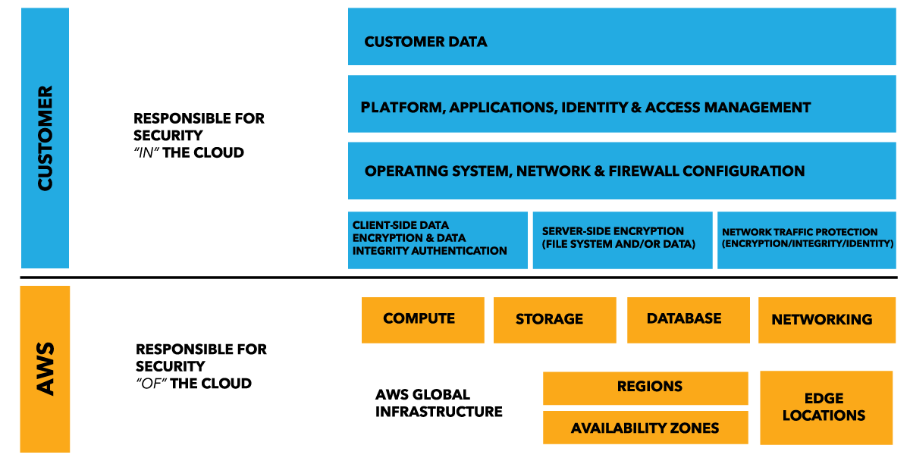

Which of the following does AWS provide for you as part of the shared responsibility model?
আপনি একটি media company-র Solutions Architect, এবং আপনাকে একটি on-premise web application architecture AWS-এ migrate করার নির্দেশ দেওয়া হয়েছে। design process-এর সময় আপনাকে বর্তমান on-premise security বিবেচনা করতে হবে এবং AWS-এ কোন security attribute-গুলোর দায়িত্ব আপনার, তা নির্ধারণ করতে হবে।
shared responsibility model-এর অংশ হিসেবে AWS আপনাকে নিচের কোনটি দেয়?
Correct: B. Why it is right
Shared Responsibility Model e AWS er kaj holo security OF the cloud: physical facilities, hardware, physical network infrastructure, host OS ar virtualization layer. Customer er kaj holo security IN the cloud: data, guest OS patch, Security Group config, IAM user access.
Tai 4 ta option er moddhe shudhu physical network AWS er dayitto. Note: ei model ta SAA course er slide e naam kore nai (Cloud Practitioner topic), official page: aws.amazon.com/compliance/shared-responsibility-model.
Why the other options are wrong
- A. Customer data sobsomoy customer er dayitto (encryption, access control) - security IN the cloud.
- C. Instance er guest OS patch, Security Group config egulo customer kore; AWS shudhu host/virtualization porjonto dekhe.
- D. Ke AWS environment e dhukte parbe (IAM users, permissions, MFA) - eta customer configure kore, AWS na.
Keyword: AWS provide kore shared responsibility te → security OF the cloud → Physical network infrastructure
Original explanation (English)
Security and Compliance is a shared responsibility between AWS and the customer. This shared model can help relieve customer’s operational burden as AWS operates, manages and controls the components from the host operating system and virtualization layer down to the physical security of the facilities in which the service operates. The customer assumes responsibility and management of the guest operating system (including updates and security patches), other associated application software as well as the configuration of the AWS provided security group firewall.
Customers should carefully consider the services they choose as their responsibilities vary depending on the services used, the integration of those services into their IT environment, and applicable laws and regulations. The nature of this shared responsibility also provides the flexibility and customer control that permits the deployment. As shown in the chart below, this differentiation of responsibility is commonly referred to as Security “of” the Cloud versus Security “in” the Cloud.
Refer to this diagram for a better understanding of the shared responsibility model.

Resources:
https://aws.amazon.com/compliance/shared-responsibility-model/
References: https://aws.amazon.com/compliance/shared-responsibility-model/